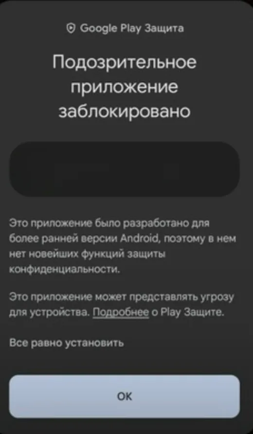
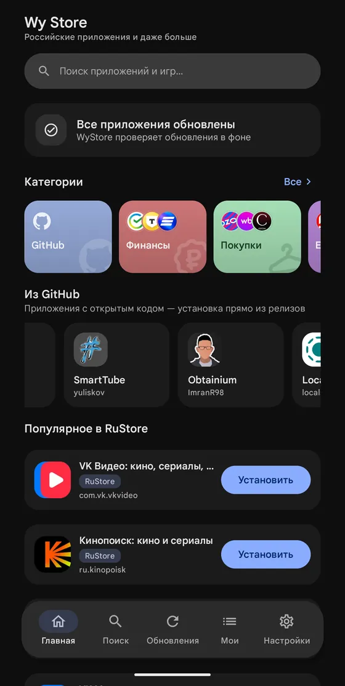
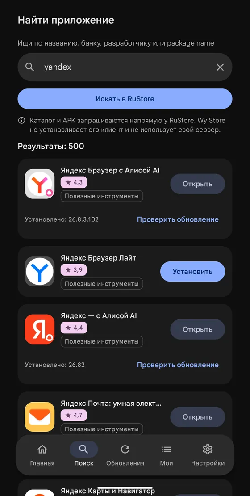
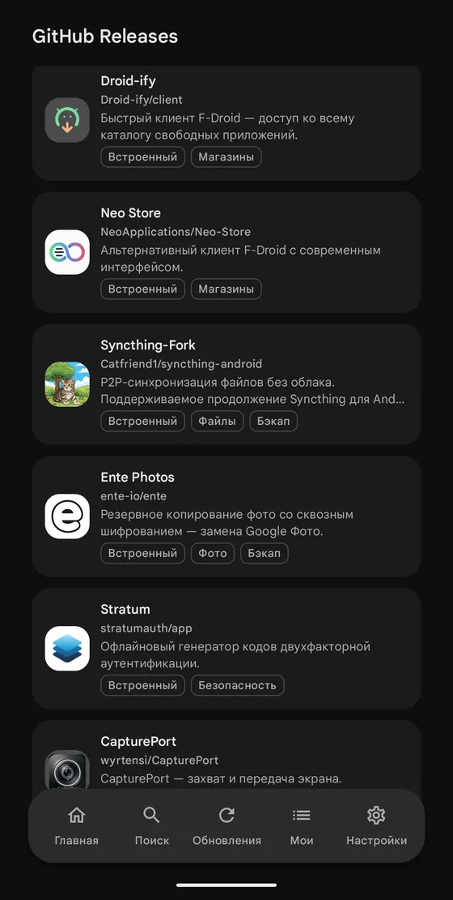
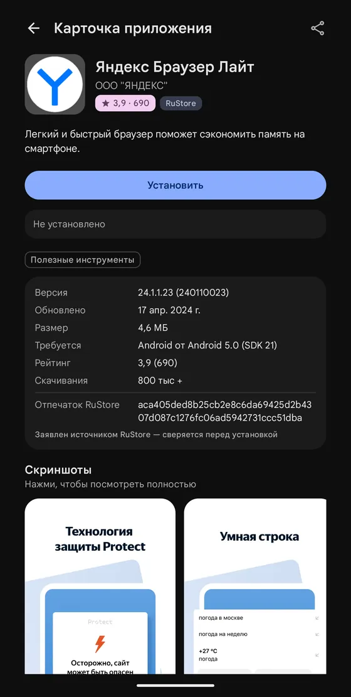
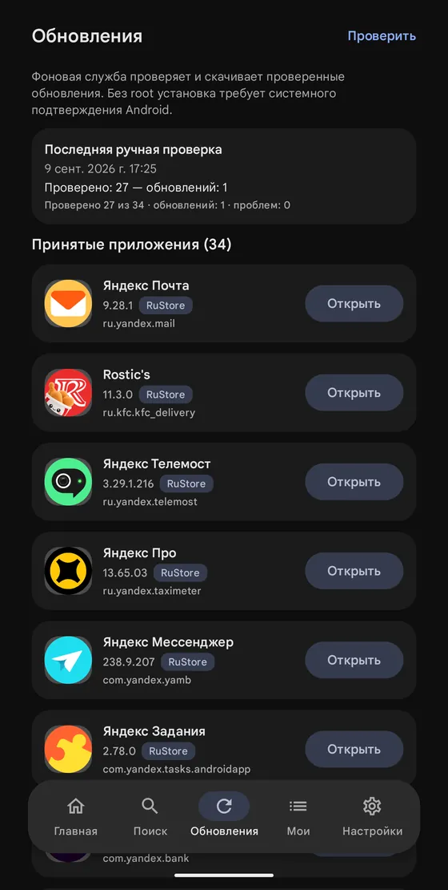
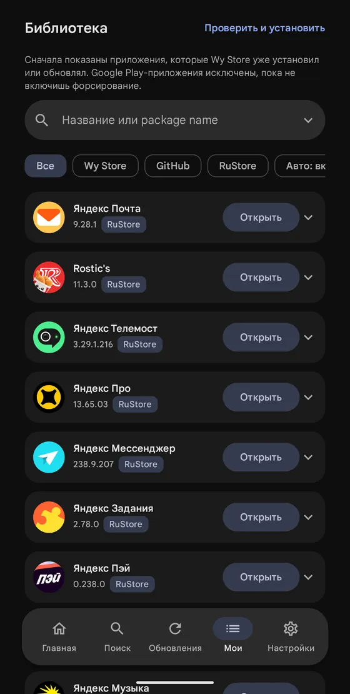

Wy Store
Звичні російські застосунки — і ніхто не стежить, що ви ставите
Ті самі застосунки, що й у RuStore, плюс релізи з GitHub. Wy Store завантажує і ставить їх сам, через системний установник Android. Обліковий запис не потрібен — ні RuStore, ні будь-чий інший.
Android 9.0 і новіші · близько 9 МБ · відкритий код, ліцензія MIT
Пошук у каталозі RuStore
Шукайте за назвою, банком, розробником або package name. У картці — рейтинг, розділ і статус: встановлено, є оновлення чи ще немає на телефоні. Каталог і APK запитуються напряму в RuStore: Wy Store не ставить його клієнт і не тримає власного сервера.
Підтримуються безкоштовні застосунки. Платне і покупки всередині лишаються за офіційним клієнтом.
Друге джерело — GitHub
Релізи проєктів з відкритим кодом, яких у RuStore немає: Droid-ify, Neo Store, Syncthing, Ente Photos, Stratum та інші. Ставляться просто з релізів, у кожної картки підписане джерело.
Власний публічний репозиторій додається посиланням. Реліз обирається за правилами: nightly-теги і релізи без придатного APK пропускаються.
Ті самі файли, що й у RuStore
Wy Store ставить рівно ті застосунки, які розробники самі виклали в RuStore, — без змін і без посередників. Файл приходить із серверів RuStore, і перед встановленням Wy Store звіряє, що він саме той: підпис розробника і версія збігаються з карткою.
На картці — версія, розмір, потрібний Android, рейтинг і кількість завантажень, як і в RuStore.
Оновлюється у фоні
Wy Store перевіряє оновлення за розкладом і завантажує їх сам. Далі все залежить від телефона: на одних система ставить оновлення без запитань, на інших — просить підтвердити. Ми намагаємося, щоб вашої участі потрібно було якомога менше, але обіцяти це на кожному пристрої не можна.
| Android 12 і новіші | як правило, без запитань — для застосунків, які ставив Wy Store |
|---|---|
| Android 9, 10, 11 | система попросить підтвердити — так у будь-якого магазину |
| Перше встановлення | завжди з підтвердженням |
| З root | підтримується: усе ставиться тихо, у фоні, без сповіщень — вмикається в налаштуваннях |
Мої застосунки
Усе встановлене, з фільтрами за джерелом: Wy Store, GitHub, RuStore. Першими йдуть застосунки, які Wy Store поставив або оновлював сам. Оновити і видалити — з цього ж списку, «Перевірити і встановити» — однією кнопкою.
Застосунки з Google Play не чіпаються, поки ви не ввімкнете це для конкретного застосунку.
- Ні облікового запису.
- Ні аналітики.
- Ні реклами.
- Ні ваших даних.
Wy Store нічого про вас не збирає і нікуди не надсилає. Застосунок звертається лише до RuStore і GitHub — по каталог і файли. Усе інше лишається на телефоні. Політика повністю.
Поставити
- Відкрийте завантажений
wystore.apk. - Android один раз запитає дозвіл на встановлення з цього джерела.
- Далі Wy Store оновлює себе сам — він стежить за релізами в репозиторії.

Усі версії Wy Store підписані одним ключем розробника, і Android не дасть підмінити застосунок чужою збіркою під час оновлення. Як перевірити підпис вручну — в описі безпеки.
Wy Store не пов’язаний з RuStore і не діє від його імені: RuStore тут — джерело даних.





